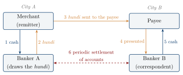
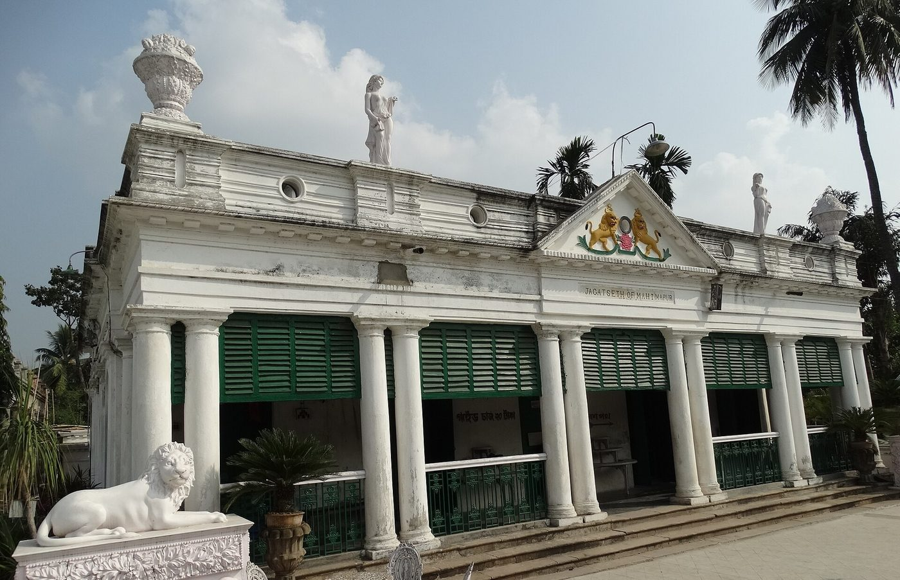

Chapter 6: Credit, Banking and Commercial Law¶
Chapter Overview
Lending at interest is attested in India from the later Vedic texts, and the law of debt is the first of the eighteen titles of law in the Manusmṛti. This chapter describes what the Arthaśāstra and the dharmaśāstra actually say about interest, pledges, sureties, deposits and partnership, including the rates graded by varṇa. It then turns to the institutions that handled credit — guilds, temples and monasteries, and professional bankers — and to the hundī, the sarrāf, and the great banking houses of the Mughal and colonial periods: the Jagat Seths, the Marwaris and the Nattukottai Chettiars, their role in revenue farming and state finance, and the colonial banks that grew up beside them. Throughout, it marks where modern categories such as insurance, the joint-stock firm or the central bank fit the evidence and where they do not.
6.1 Debt in Early Texts¶
The word for debt, ṛṇa, carries a heavy moral load in Indian thought. A well-known passage of the Taittirīya Saṃhitā (6.3.10.5) says that a brāhmaṇa is born owing three debts: study to the seers, sacrifice to the gods and offspring to the ancestors. The doctrine of the “three debts” became a commonplace of later dharmaśāstra and was used to argue for the householder’s life against renunciation (Kane 1930). It is a religious metaphor, not a theory of credit, but it shows how familiar the relation of creditor and debtor was.
Commercial debt appears in the Ṛgveda itself: the gambler’s hymn (Ṛgveda 10.34) describes the indebted gambler who wanders in fear. Later Vedic texts use kusīda for a loan at interest, and the Dharmasūtras (3rd–1st c. BCE on Olivelle’s dating) regulate interest and list moneylending (kusīda) among the livelihoods of the vaiśya (Olivelle 1999). The Manusmṛti (c. 2nd c. CE) includes moneylending in the vaiśya’s occupations (1.90) and forbids brāhmaṇas and kṣatriyas to lend at interest except, in distress, at a low rate (10.117) (Olivelle 2004).
Buddhist texts take a practical view of wealth, as the Sigālovāda Sutta’s advice on dividing a householder’s income shows (Section 2.11.1). Gregory Schopen has shown that the Mūlasarvāstivāda Vinaya expects monasteries to lend their permanent endowments at interest, using written contracts with witnesses and pledges (Schopen 2004). Jain merchant communities, whose religion restricts occupations involving violence, were prominent in trade and moneylending from the medieval period onwards (Jaini 1979; Laidlaw 1995).
6.2 The Law of Debt¶
In the Manusmṛti the non-payment of debts (ṛṇādāna) heads the list of eighteen titles of law (8.4), which also includes deposits (nikṣepa), partnership (saṃbhūya-samutthāna), sale by a non-owner, breach of compact and the rescission of sale and purchase. The later smṛtis of Yājñavalkya (c. 4th–5th c. CE), Nārada (c. 5th–6th c. CE), Bṛhaspati and Kātyāyana elaborate these titles, and medieval commentaries and digests systematise them (Kane 1930). This is a body of normative law written by brāhmaṇa jurists. How far it governed actual lending is hard to know; the texts themselves repeatedly defer to local and group custom.
6.2.1 Interest Rates¶
The Arthaśāstra (Chapter 2) opens its chapter on debts (AŚ 3.11) with a scale of monthly interest per hundred paṇas: one and a quarter is “just” (dharmya); five is the commercial rate (vyāvahārika); ten is for those who travel through wild country (kāntāraga); and twenty is for sea-traders (sāmudra). Taking more is punished by a fine, as are the witnesses to the transaction (Olivelle 2013, AŚ 3.11.1–3). The scale is explicitly a scale of risk: the further and more dangerous the journey, the higher the rate.
The Manusmṛti gives a different structure. A lender may take one-eightieth of the principal a month (one and a quarter per cent), a rate it ascribes to Vasiṣṭha; or two per cent, “remembering the conduct of good men”; or a rate graded by the borrower’s varṇa (8.140–142):
Manusmṛti 8.142
dvikaṃ trikaṃ catuṣkaṃ ca pañcakaṃ ca śataṃ samam
māsasya vṛddhiṃ gṛhṇīyād varṇānām anupūrvaśaḥ
“He may take two, three, four and five per cent a month, in the order of the varṇas” (Olivelle 2004).
Yājñavalkyasmṛti 2.37–38 combines the two systems. When a pledge is given, interest is one-eightieth a month; otherwise it is two, three, four or five per cent according to varṇa; those who travel through forests pay ten and those who go by sea twenty per cent a month; or borrowers of any caste may pay the interest they have agreed to (Kane 1930). Table 6.1 sets the rates side by side.
| Category | AŚ 3.11.1 | Manu 8.140–142 | Yājñ. 2.37–38 |
|---|---|---|---|
| “Just” rate; loan with pledge | 1.25 (dharmya) | 1.25 (“rule of Vasiṣṭha”) | 1.25 (with pledge) |
| “Practice of the good” | — | 2 | — |
| Commercial loans | 5 | — | — |
| Unsecured loans, by varṇa of borrower (brāhmaṇa, kṣatriya, vaiśya, śūdra) | — | 2, 3, 4, 5 | 2, 3, 4, 5 |
| Traders through wild country | 10 | — | 10 |
| Sea traders | 20 | rate fixed by experts (8.157) | 20 |
| Rate agreed by the parties | — | — | permitted |
A monthly rate of 1.25 per cent is 15 per cent a year; 5 per cent a month is 60 per cent a year. Sources: Olivelle (2013); Olivelle (2004); Kane (1930).
Two features deserve comment. First, the varṇa-graded scale charges higher rates to borrowers of lower rank. Commentators explain it as a matter of risk and trustworthiness; whatever its rationale, it wrote into law a hierarchy in which the śūdra borrower paid two and a half times as much as the brāhmaṇa. Second, the very high rates for sea and forest trade are a recognition of risk, but the texts do not say whether the lender lost his claim if the ship or caravan was lost, as he did in the Greek and Roman maritime loan. For sea voyages Manu (8.157) leaves the rate to those expert in voyages, place and time — in effect to merchant custom. The best-documented loan connected with the India trade is in fact Greek: the second-century Muziris papyrus preserves part of a loan agreement and the valuation of a cargo shipped from Muziris on the Malabar coast to Egypt (De Romanis 2020). Sea loans and the law of the sea are discussed further in Chapters 11 and 15.
6.2.2 Limits on Accumulation and Kinds of Interest¶
The texts limit the total that can be recovered. Manu (8.151) rules that interest on money received at one time may not exceed the principal (so that the total due is at most double, the dvaiguṇya rule), and that for grain, fruit, wool and draught animals the total may not exceed five times the principal. Yājñavalkya (2.39) sets different maximum multiples for gold, grain, cloth and liquids, and includes the offspring of animals and of slave women among things that could be claimed as increase — a reminder of how far property in persons was part of this law (Olivelle 2004; Kane 1930).
Later jurists, especially Nārada and Bṛhaspati, classify interest. As summarised by Kane, the main kinds are periodic interest (kālikā); “bodily” interest (kāyikā), paid in labour or through the use of a pledged animal; compound interest (cakravṛddhi), interest on interest; interest stipulated by the debtor himself (kāritā), often in an emergency; and, in Bṛhaspati, a daily interest that “grows like a tuft” (śikhāvṛddhi) and the use of a pledge in lieu of interest (bhogalābha). Manu (8.153) disapproves of some of these, and the commentators differ on the exact meaning of each term (Kane 1930). Compound interest was thus disapproved of and limited rather than simply forbidden.
6.2.3 Pledges, Sureties and Written Contracts¶
Security for a loan took the form of a pledge (ādhi) or a surety (pratibhū). The smṛtis distinguish a pledge to be kept (gopya), which the creditor must not use, from a pledge to be enjoyed (bhogya), such as land or a house whose produce or rent stands in place of interest; they also regulate the loss or damage of a pledge. Yājñavalkya (2.53) distinguishes sureties for appearance, for good faith and for payment, and specifies when each surety, or his sons, must make good the debt (Kane 1930).
Written documents (lekhya) are treated at length in Yājñavalkya and Nārada as one of the three means of proof, alongside witnesses and possession. A debt document was to state the names of the parties, the amount, the interest, the date and the witnesses, and to be written by the debtor or by a scribe in his presence (Kane 1930). Buddhist Vinaya texts and later inscriptions confirm that written loan contracts were used in practice (Schopen 2004).
6.2.4 Model Documents: The Lekhapaddhati¶
The fullest evidence for how such documents were actually drawn up comes from western India. The Lekhapaddhati (“method of writing documents”) is a Gujarati formulary: a collection of model documents in Sanskrit, with many Old Gujarati words, compiled for the use of scribes. Most of its dated specimens belong to the Caulukya and Vāghelā kingdoms of the thirteenth century. Alongside forms for royal grants, appointments and treaties, it gives models of private documents: deeds of sale and mortgage of land and houses, loan bonds, receipts, deposits, agreements between partners, and deeds for the sale of slave women (Section 18.13). The deeds name the parties, the sum, the rate of interest, the security, the guarantors and the witnesses, and they distinguish pledges whose produce the creditor enjoys from those he must merely keep, the distinction the smṛtis draw between bhogya and gopya pledges. The formulary was first edited in the Gaekwad’s Oriental Series in 1925, and Pushpa Prasad has edited and translated it with a full commentary (Prasad 2007). It shows that the categories of the law books were the working vocabulary of local scribes and merchants, and it is one of the very few bodies of evidence for ordinary commercial contracts in India before the Mughal period.
6.2.5 Recovery and its Harshness¶
The law of recovery was severe. Manu (8.49) allows a creditor to recover his money by persuasion, by legal suit, by stratagem, by customary pressure and by force. A debtor of the same or lower caste who could not pay might be made to work off the debt, while a debtor of higher caste was to pay by instalments (8.177). Nārada’s list of the kinds of slave includes a person whose debts a master had paid. The smṛtis also make sons and grandsons liable for an ancestor’s debts — the “pious obligation”, which became an important doctrine of Anglo-Hindu law under colonial rule (Kane 1930; Olivelle 2004). These rules show the lending relationship as one of power as well as contract, and they should be read alongside the ceilings on interest.
6.3 Deposits and Partnership¶
6.3.1 Deposits¶
The Arthaśāstra chapter on deposits (AŚ 3.12) deals with the open deposit (upanidhi), the pledge, and related transactions such as the ādeśa, an order to deliver something to a third person, and the anvādhi, a thing sent through an intermediary (Olivelle 2013; Kangle 1960). The depositee was liable for loss caused by his own fault but not, in general, for loss by fire, flood, theft by others or the king’s action. The smṛtis treat the sealed or closed deposit (nikṣepa) and the open deposit similarly (Kane 1930).
The ādeśa resembles an order to pay, but the texts are too brief to treat it as a negotiable instrument: these are rules about bailment and agency between private persons, and the Arthaśāstra does not describe a deposit bank.
6.3.2 Partnership¶
“Undertaking together” (saṃbhūya-samutthāna) is the dharmaśāstra title for partnership. Manu’s section under this title is chiefly about how priests who perform a sacrifice jointly should share the fee (8.206–211). Yājñavalkya (2.259–265) and Nārada give general rules for merchants who trade jointly: profit and loss are shared in proportion to each partner’s contribution or as agreed; a partner who acts against the others’ instructions or through negligence bears the loss he causes; and one who saves the common property from a calamity caused by fate or the king receives a tenth of what he saves. The same rules are extended to farmers, artisans and others who work together (Kane 1930). The Arthaśāstra similarly provides that guild workers and partners divide their earnings as agreed or equally (AŚ 3.14) (Olivelle 2013).
These are rules for partnerships of persons who share profit and loss; the texts know no partner of limited liability and nothing resembling a joint-stock company. For the organisation of maritime ventures, the best documentary evidence comes from outside the Sanskrit tradition: the Cairo Geniza letters show Jewish merchants trading with India in the eleventh and twelfth centuries through formal partnerships and commenda-type agreements, often with Indian associates (Goitein and Friedman 2008).
6.4 Institutions of Credit before 1500¶
6.4.1 Guilds as Trustees¶
The earliest institutional lenders and borrowers we can document are the guilds that received permanent endowments, of which Uṣavadāta’s deposits with the weavers of Govardhana at Nasik are the best known (Section 4.5.1). The guilds evidently used the capital in their business; the inscriptions do not show them lending to the public.
6.4.2 Monasteries and Temples¶
Buddhist monasteries held permanent endowments and, according to the Vinaya evidence, lent them at interest (Schopen 2004; Ray 1986). In south India, temple inscriptions of the Pallava, Chola and later periods record a great many endowments in money, land and livestock. A typical endowment for a perpetual lamp (Tamil nantā viḷakku) gave a flock of sheep or a herd of cows to shepherds, who supplied ghee to the temple. Money endowments were often lent to village assemblies (sabhā, ūr), which paid interest in paddy or coin to the temple. Inscriptions of the great temple at Thanjavur under Rājarāja I (r. 985–1014) record such investments with many villages. The temple thus acted as a channel through which royal and private wealth was lent into the agrarian economy (Hall 1980; Nilakanta Sastri 1955). The temple and other religious institutions as economic actors are examined more fully in Chapter 9.
These arrangements were real and widespread, but they were endowment management rather than banking in the modern sense; the temple did not take deposits from the public or issue instruments.
6.5 Bankers, Money-Changers and the Hundī¶
6.5.1 Sarrāfs and Mahājans¶
From the Sultanate period onward the sources describe a professional class of bankers and money-changers, called sarrāf (from Arabic ṣarrāf, anglicised as “shroff”), mahājan, sāhūkār or seṭh. Their basic function arose from the monetary system: in Mughal India coins of different mints, years and weights circulated together, and the sarrāf assayed coins and charged a discount on worn or older ones. On this base they built deposit-taking, lending to merchants, nobles and the state, the remittance of revenue and trade payments by hundī, and the discounting of bills (Habib 1964; Raychaudhuri and Habib 1982).
Banking was concentrated in particular communities: Gujarati vāṇiyās (Hindu and Jain), Marwaris, Khatris, the Multanis and Shikarpuris of the north-west, and in the south the Chettiars and Komatis. Indian bankers were also active abroad: Multani and Khatri moneylenders worked across Iran and Central Asia as far as Astrakhan in the seventeenth and eighteenth centuries (Dale 1994; Levi 2002). In the ports, the sarrāfs of Surat lent to Indian merchants and to the English and Dutch companies (Das Gupta 1979; Subramanian 1996). Habib’s study of usury in Mughal India also shows the harsher side of the same system, the indebtedness of peasants to rural moneylenders (Habib 1964).
6.5.2 The Hundī¶
The hundī was a written order, usually in a regional mercantile script, by which one banker or merchant directed another to pay a sum to a third party. It served three purposes: to remit money between places without moving coin, to give credit (a hundī payable after a period could be sold at a discount), and to settle accounts between correspondents. The Mughal treasury used hundīs to remit revenue from the provinces, and the European companies used them for their inland payments (Habib 1964; Raychaudhuri and Habib 1982).
| Kind | Description |
|---|---|
| Darśanī | Payable on sight (on presentation) |
| Muddatī | Payable after a stated period; could be discounted |
| Śāh-jog | Payable to a śāh, a respectable person known in the market, which gave some assurance about the holder |
| Dhanī-jog | Payable to the named payee |
| Firmān-jog | Payable to order |
| Jokhamī | Drawn against goods in transit and payable only if the goods arrived safely |
Source: Jain (1929). Names and forms varied by region.
A merchant in one city paid cash to a local banker, who drew a hundī on his correspondent in another city; the payee presented it there and was paid, and the two bankers settled between themselves periodically (Figure 6.1). The cost of the hundī — its rate of exchange or discount — varied with distance, season and the supply of money at each place, and the rates themselves were an index of commercial conditions. The system rested on correspondent relations within communities and on reputation: a banker who dishonoured a hundī risked exclusion from the network (Jain 1929; Habib 1964).

The jokhamī hundī combined remittance with a contingency: if the goods were lost, the bill was not paid. In the seventeenth century the Mughal sources and European observers also describe bīma, the underwriting of goods and ships against loss for a premium, by bankers in the major commercial centres (Raychaudhuri and Habib 1982). This is genuine evidence of insurance practice, and it belongs to early modern India.
Debate: How old is the hundī?
Whether the hundī is older than the European bill of exchange (the Italian lettera di cambio) cannot be shown. The instrument is well documented only from the sixteenth and seventeenth centuries, through Mughal-period Persian and European records (Habib 1964); attempts to trace it to the ādeśa of the Arthaśāstra or to early medieval texts rest on uncertain interpretations. Instruments for transferring money by written order existed in several societies: the suftaja of the Abbasid world, the Chinese “flying money” (feiqian) of the Tang period, and the bills of exchange of Italian merchants from the thirteenth century. The hundī belongs to this wider family; questions of priority cannot be settled and are not very illuminating.
6.5.3 Remittance, Revenue and the Shroff¶
The two basic kinds of hundī in Table 6.2 served different purposes. A darśanī or sight bill was chiefly an instrument of remittance: it moved purchasing power from one city to another, and its price expressed the cost of that movement. A muddatī or usance bill, payable after a stated number of days, was also an instrument of credit. A merchant who bought goods could pay with a bill falling due after the goods had been sold, and the seller could obtain cash at once by selling the bill to a shroff at a discount. The discount combined interest for the term of the bill with the cost of remittance, so that the hundī market joined the market for short-term credit to the market for exchange between places (Jain 1929).
Habib’s study of the Mughal evidence shows how far the state depended on this system. Revenue collected in the provinces was remitted to the imperial treasury by bill, and jāgīrdārs whose assignments lay far from where they served had their revenue sent to them in the same way. Nobles and officials kept deposits with sarrāfs and borrowed from them against expected revenue; the European companies raised money for their inland purchases by selling bills drawn on their coastal factories. Because bullion entered India mainly at the ports and moved inland with trade, the rates for bills between the ports and the interior moved with the seasons of trade and the arrival of the treasure ships (Habib 1964; Raychaudhuri and Habib 1982). Remittance by bill was, in normal times, cheaper and safer than carrying coin over long distances.
L. C. Jain’s survey, written when the system was still in full use, shows the shroff of the early twentieth century performing the same functions within the colonial economy. Indigenous bankers remitted funds for trade, financed the movement of crops from the villages to the markets and ports, and dealt in bills whose rates rose in the busy season after the harvest and fell in the slack season. Their rates were generally above those of the joint-stock banks, and the two markets were connected mainly through the rediscounting of hundīs (Jain 1929).
6.6 Great Banking Houses, c. 1650–1900¶
6.6.1 The Jagat Seths of Murshidabad¶
The most powerful banking house of eighteenth-century India was that of the Jagat Seths of Murshidabad. The firm was founded by Hiranand Sahu, an Oswal Jain from Marwar, who settled at Patna in the later seventeenth century. His son Manikchand followed the Mughal dīwān Murshid Quli Khan to Murshidabad, and Manikchand’s successor Fatehchand received the title Jagat Seṭh (“banker of the world”) from the emperor Muhammad Shah in the early 1720s. The house handled the remittance of Bengal’s revenue to Delhi, dominated the Murshidabad mint, lent to the Nawabs and to the English, Dutch and French companies, and had branches in many cities (Leonard 1979; Chaudhuri 1978; Prakash 1985). Figure 6.2 shows the family’s house near Murshidabad.


The Jagat Seth Mahtab Rai and his cousin Swarup Chand were among the Bengal notables who supported the English against Siraj-ud-Daula in 1757. The alliance did not protect them: both were put to death in 1763 on the orders of Mir Qasim, and the house declined as the East India Company took over the revenue and its remittance.
Debate: The “great firm” theory
Karen Leonard proposed that the great Indian banking firms, by shifting their credit and support from the Mughal centre to regional rulers and to the European companies between about 1650 and 1750, contributed decisively to the collapse of the Mughal empire (Leonard 1979). The thesis drew attention to the political importance of bankers, but it has been criticised: J. F. Richards argued that the Mughal fiscal system did not depend on bankers’ credit to the extent the theory requires (Richards 1981), and other historians see the bankers as adapting to political change rather than causing it. Bayly’s study of north Indian merchants and bankers shows them as resilient intermediaries in the transition to British rule (Bayly 1983). The theory is best treated as a debated interpretation.
6.6.2 Bankers, Revenue Farming and “Portfolio Capitalists”¶
The bankers’ most profitable business with the state was the revenue itself. In the eighteenth century the successor states of the Mughal empire and the Marathas relied increasingly on revenue farming (ijāra): the right to collect the land revenue of a district was granted for a term to a contractor who promised a fixed sum. Bankers advanced that sum to the treasury, stood surety for the farmers, or took up farms themselves, recovering their money with interest from the collections. Bayly’s study of north India shows bankers in Banaras, Lucknow and other towns financing the revenue of regional rulers, remitting tribute to the East India Company, and supplying the armies of both, so that commercial credit and state finance became closely interlocked (Bayly 1983).
Sanjay Subrahmanyam and C. A. Bayly have called the men who combined these roles “portfolio capitalists”: entrepreneurs who spread their capital across revenue farming, trade, money-lending, military supply and, in some cases, overseas shipping, and who moved between them as opportunity and political risk dictated. They trace the type from the south Indian magnates of the sixteenth and seventeenth centuries (Chapter 18) to the eighteenth century, and suggest that the East India Company itself rose to power by drawing on the same combination of trade, revenue and armed force, and on the same Indian creditors (Subrahmanyam and Bayly 1988). The concept widens Leonard’s argument: bankers were not a separate class that chose between rulers from outside, but part of a broader group of intermediaries whose investments in revenue gave them a direct stake in state formation. The price of this involvement was exposure to political violence, as the fate of the Jagat Seths in 1763 showed.
6.6.3 The Marwaris¶
The Marwaris — trading and banking castes, mostly Agarwal, Maheshwari and Oswal, from western Rajasthan — spread across northern and eastern India from the seventeenth century as bankers to courts and armies and as traders. Under British rule they became the leading indigenous financiers of Calcutta’s trade, acting as brokers and baniyās to European firms and speculating in commodities, and in the twentieth century some families moved into industry. Timberg’s study traces this movement from trade to industry and emphasises the role of family firms, caste networks and credit among community members (Timberg 1978).
6.6.4 The Nattukottai Chettiars¶
The Nattukottai Chettiars (Nakarattār) of Chettinad in Tamil Nadu were a banking caste whose firms, organised through a system of agents and of deposits among caste members, financed trade and agriculture across southern India, Ceylon, Burma, Malaya and French Indochina in the nineteenth and early twentieth centuries. In Lower Burma their loans financed the expansion of rice cultivation; when the depression of the 1930s caused widespread default, large areas of land passed into Chettiar hands, provoking hostility that culminated in post-independence Burmese legislation against them. Their caste institutions, including temple organisations, served to pool capital and enforce obligations (Rudner 1994; Ray 1995).
The Chettiars’ expansion followed the British empire across the Bay of Bengal. They were lending in Ceylon in the first half of the nineteenth century; after the annexation of Lower Burma in 1852 and the opening of the Suez Canal in 1869, which together turned the Irrawaddy delta into one of the world’s great rice-exporting regions, Burma became their largest field. Branches followed in Penang, Singapore and the Malay states, in Saigon and in Sumatra. Typically a firm’s capital and its partners remained in Chettinad, while its overseas branches were run by agents, often young men of the community, who served for a fixed term of a few years on a salary and a share of the profits before returning home (Rudner 1994).
David Rudner’s study explains how the system was held together. A firm worked with its partners’ own capital, with deposits from other Nakarattār firms and from members of the community, including funds held for women and minors, and with endowments managed for temples. Firms lent to one another, kept running accounts with one another across the network, and settled disputes within the caste rather than in the courts. Kinship, marriage and membership of the community’s clan temples defined who could be trusted and who could be excluded. Rudner argues that caste here was not an obstacle to capitalism but the form in which a sophisticated banking system was organised: its rules of membership and reputation did the work that, in European banking, was done by corporate law and regulation (Rudner 1994).
The Chettiars also stood between the colonial banks and Asian borrowers. In Rangoon, Colombo and Singapore they borrowed from the exchange banks and the presidency banks, usually on hundīs, and lent onward to cultivators, shopkeepers, rice millers and landlords whom the European banks would not serve. Their capital was therefore partly European capital, and when the depression of the 1930s cut off credit at the top, the pressure passed down to the debtor in the village (Ray 1995; Rudner 1994). The political consequences in Burma, and the later history of the community, are discussed in Chapters 19 and 21.
6.7 Account Books and Commercial Arithmetic¶
Indian merchants and bankers kept accounts in bound ledgers known as bahī-khātā, written in mercantile scripts such as Mahājanī. A firm kept a day book of all transactions, a cash book and a ledger with an account for each customer, in which receipts were entered on the credit side (jamā) and payments on the debit side (nāme or udhār). In many communities new account books are still ceremonially opened at Dīvālī with worship of Lakṣmī. The system allowed bankers to trace large numbers of hundīs and current accounts across correspondent networks (Jain 1929; Timberg 1978).
The books themselves had a characteristic form. They were long, narrow volumes of unruled paper, folded lengthwise, bound in red cloth and tied with string, and they opened with an invocation — śrī, the name of Gaṇeśa or Lakṣmī, a svastika or the words śubh lābh (“auspicious profit”). Entries were written in columns with the sums in a separate column to the right, and the accounts were balanced and carried forward at the end of the commercial year. In western India the new books are opened at Dīvālī with a worship of the account books (Gujarati copḍā pūjan); in Bengal the traders’ new year, on the first day of Baiśākh, is marked by the opening of a new ledger (hāl khātā), at which customers are invited to settle their dues and are offered sweets. The scripts in which the books were kept, Mahājanī, Laṇḍā and their relatives, wrote vowels sparingly or not at all, which made them quick to write and difficult for outsiders to read; the scripts of commerce are described in Volume 10, Śabda Vidyā. A large firm employed a head clerk or manager (munīm), who kept the books, conducted correspondence and often managed a branch on the proprietor’s behalf; the munīm was frequently of the same community as his employer and might later set up on his own.
Village and state accounts formed a parallel tradition. In most regions each village had a hereditary accountant — the paṭvārī of north India, the kulkarṇī of Maharashtra, the karṇam of the Telugu and Tamil country — who kept the records of holdings, crops and revenue, and above him the district registrars (qānūngos in the Mughal system, deshpāṇḍes in the Deccan). Revenue accounts at the higher levels of the Mughal and successor administrations were kept in Persian, using a special numerical notation (siyāq) described in Volume 11, Gaṇita; the Maratha administration kept its own very large archive in Marathi (Chapter 18). The colonial state took over these village officers and their records, standardised them, and made the paṭvārī’s papers the basis of the record of rights in land.
Whether bahī-khātā constitutes double-entry bookkeeping, and whether it is older than the Italian system described by Luca Pacioli in 1494, has been debated. Most descriptions come from the nineteenth and twentieth centuries, and few dated early account books have been studied, so claims of priority cannot be tested. B. M. Lall Nigam has argued that bahī-khātā is a complete double-entry system and older than Pacioli (Lall Nigam 1986), a claim that drew a critical comment from C. W. Nobes (Nobes 1987); the first part of the claim concerns the logic of the books and can be examined, the second cannot be demonstrated without dated early account books. It is safer to say that India had a well-developed indigenous system of mercantile accounting whose history remains to be written.
Indian mathematical texts include many commercial problems. Mahāvīra’s Gaṇitasārasaṃgraha (c. 850 CE) and Bhāskara II’s Līlāvatī (1150 CE) contain problems on simple and compound interest, partnership shares, mixtures and the price of goods, which reflect the arithmetic merchants needed. The mathematics is treated in Volume 11, Gaṇita.
6.8 Colonial Change¶
Colonial rule changed the setting of Indian finance without abolishing indigenous banking. The Company’s assumption of the revenue of Bengal after 1765 removed the bankers’ most profitable business there, and the Company’s own treasuries took over much of the remittance of public funds that the great houses had handled.
6.8.1 The Colonial Banking Framework¶
The first European-style banks in India were founded by the agency houses of Calcutta in the late eighteenth and early nineteenth centuries, and most of them failed with their parent houses in the commercial crisis of the early 1830s. More durable were the presidency banks — the Bank of Calcutta (1806, renamed the Bank of Bengal in 1809), the Bank of Bombay (1840) and the Bank of Madras (1843) — in which the government held shares and appointed directors. They kept the government’s balances and lent mainly to European firms and against government securities; their right to issue notes ended when the government took over the paper currency under the Act of 1861. The three were merged in 1921 as the Imperial Bank of India. Foreign trade was financed by exchange banks with headquarters in London or the East, such as the Chartered Bank of India, Australia and China (1853) and the Hongkong and Shanghai Banking Corporation (1865) (Tomlinson 1993; Roy 2000).
Indian joint-stock banking grew later. The Punjab National Bank, founded at Lahore in 1894 by Indian promoters, was followed in the swadeshi years by several others (Chapter 19, Section 19.14), but many small banks failed in a wave of crises from 1913, which made depositors cautious for a generation. For the countryside the government turned to co-operation: the Co-operative Credit Societies Act of 1904 provided for village credit societies, intended to free cultivators from the moneylender. The Reserve Bank of India, recommended by the Royal Commission on Indian Currency and Finance of 1926, began work in 1935 as the central bank, issuing the currency and holding the reserves of the banking system. Statute law replaced the dharmaśāstra and custom in commercial matters (Roy and Swamy 2016): the Indian Contract Act (1872) and the Negotiable Instruments Act (1881), the latter saving local usage for instruments in an Indian language, such as the hundī.
6.8.2 The Bazaar and the Banks¶
Rajat Kanta Ray has argued that the result was a two-tier structure, in which European banks and firms controlled the upper levels of finance while an Indian “bazaar” economy of sarrāfs, Marwaris and Chettiars, linked to it through the discounting of hundīs, continued to finance internal trade and agriculture until well into the twentieth century (Ray 1995). The link was concrete: the presidency banks, and later the Imperial Bank, discounted hundīs bearing the names of shroffs whom they accepted as creditworthy, and the shroffs re-lent the funds in the bazaar at higher rates (Ray 1995; Jain 1929). Rural indebtedness to moneylenders became a major colonial concern, leading to legislation such as the Deccan Agriculturists’ Relief Act of 1879 and to the banking enquiry committees of 1929–31. After 1935 the Reserve Bank tried to bring indigenous bankers into a regulated system, but most were unwilling to give up their trading business or to submit their accounts to inspection, and the attempt had little success (Chapter 21). These developments, and the wider debate on the colonial economy, are discussed in Chapter 19.
Cross-Reference: Related chapters
For coinage and money-changing see Chapter 5; for market regulation, weights and prices see Chapter 7; for sea loans, port law and the law of the sea see Chapter 15; for merchant communities in the Mughal period see Chapter 18.
Further Reading¶
For the law of debt, deposits and partnership in the dharmaśāstra, Kane (1930) remains the standard survey; the primary texts are available in Olivelle (2004) and Olivelle (2013). Schopen (2004) studies Buddhist monastic lending. For the medieval and Mughal periods see Habib (1964) and Raychaudhuri and Habib (1982); for indigenous banking in the colonial period Jain (1929), Timberg (1978), Rudner (1994) and Ray (1995); and for the debate on bankers and the Mughal state Leonard (1979), Bayly (1983) and Subrahmanyam and Bayly (1988).